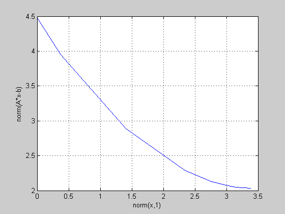

Examples from the CVX User's guide
has_quadprog = exist( 'quadprog' );
has_quadprog = has_quadprog == 2 | has_quadprog == 3;
has_linprog = exist( 'linprog' );
has_linprog = has_linprog == 2 | has_linprog == 3;
rnstate = randn( 'state' );
s_quiet = cvx_quiet(true);
s_pause = cvx_pause(false);
cvx_clear; echo on
m = 16; n = 8;
A = randn(m,n);
b = randn(m,1);
x_ls = A \ b;
cvx_begin
variable x(n);
minimize( norm(A*x-b) );
cvx_end
echo off
disp( sprintf( '\nResults:\n--------\nnorm(A*x_ls-b): %6.4f\nnorm(A*x-b): %6.4f\ncvx_optval: %6.4f\ncvx_status: %s\n', norm(A*x_ls-b), norm(A*x-b), cvx_optval, cvx_status ) );
disp( 'Verify that x_ls == x:' );
disp( [ ' x_ls = [ ', sprintf( '%7.4f ', x_ls ), ']' ] );
disp( [ ' x = [ ', sprintf( '%7.4f ', x ), ']' ] );
disp( 'Residual vector:' );
disp( [ ' A*x-b = [ ', sprintf( '%7.4f ', A*x-b ), ']' ] );
disp( ' ' );
try, input( 'Press Enter/Return for the next example...' ); clc; catch, end
echo on
bnds = randn(n,2);
l = min( bnds, [] ,2 );
u = max( bnds, [], 2 );
if has_quadprog,
x_qp = quadprog( 2*A'*A, -2*A'*b, [], [], [], [], l, u );
else,
end
cvx_begin
variable x(n);
minimize( norm(A*x-b) );
subject to
x >= l;
x <= u;
cvx_end
echo off
if has_quadprog,
disp( sprintf( '\nResults:\n--------\nnorm(A*x_qp-b): %6.4f\nnorm(A*x-b): %6.4f\ncvx_optval: %6.4f\ncvx_status: %s\n', norm(A*x_qp-b), norm(A*x-b), cvx_optval, cvx_status ) );
disp( 'Verify that l <= x_qp == x <= u:' );
disp( [ ' l = [ ', sprintf( '%7.4f ', l ), ']' ] );
disp( [ ' x_qp = [ ', sprintf( '%7.4f ', x_qp ), ']' ] );
disp( [ ' x = [ ', sprintf( '%7.4f ', x ), ']' ] );
disp( [ ' u = [ ', sprintf( '%7.4f ', u ), ']' ] );
else,
disp( sprintf( '\nResults:\n--------\nnorm(A*x-b): %6.4f\ncvx_optval: %6.4f\ncvx_status: %s\n', norm(A*x-b), cvx_optval, cvx_status ) );
disp( 'Verify that l <= x <= u:' );
disp( [ ' l = [ ', sprintf( '%7.4f ', l ), ']' ] );
disp( [ ' x = [ ', sprintf( '%7.4f ', x ), ']' ] );
disp( [ ' u = [ ', sprintf( '%7.4f ', u ), ']' ] );
end
disp( 'Residual vector:' );
disp( [ ' A*x-b = [ ', sprintf( '%7.4f ', A*x-b ), ']' ] );
disp( ' ' );
try, input( 'Press Enter/Return for the next example...' ); clc; catch, end
echo on
if has_linprog,
f = [ zeros(n,1); 1 ];
Ane = [ +A, -ones(m,1) ; ...
-A, -ones(m,1) ];
bne = [ +b; -b ];
xt = linprog(f,Ane,bne);
x_lp = xt(1:n,:);
else,
end
cvx_begin
variable x(n);
minimize( norm(A*x-b,Inf) );
cvx_end
echo off
if has_linprog,
disp( sprintf( '\nResults:\n--------\nnorm(A*x_lp-b,Inf): %6.4f\nnorm(A*x-b,Inf): %6.4f\ncvx_optval: %6.4f\ncvx_status: %s\n', norm(A*x_lp-b,Inf), norm(A*x-b,Inf), cvx_optval, cvx_status ) );
disp( 'Verify that x_lp == x:' );
disp( [ ' x_lp = [ ', sprintf( '%7.4f ', x_lp ), ']' ] );
disp( [ ' x = [ ', sprintf( '%7.4f ', x ), ']' ] );
else,
disp( sprintf( '\nResults:\n--------\nnorm(A*x-b,Inf): %6.4f\ncvx_optval: %6.4f\ncvx_status: %s\n', norm(A*x-b,Inf), cvx_optval, cvx_status ) );
disp( 'Optimal vector:' );
disp( [ ' x = [ ', sprintf( '%7.4f ', x ), ']' ] );
end
disp( sprintf( 'Residual vector; verify that the peaks match the objective (%6.4f):', cvx_optval ) );
disp( [ ' A*x-b = [ ', sprintf( '%7.4f ', A*x-b ), ']' ] );
disp( ' ' );
try, input( 'Press Enter/Return for the next example...' ); clc; catch, end
echo on
if has_linprog,
f = [ zeros(n,1); ones(m,1); ones(m,1) ];
Aeq = [ A, -eye(m), +eye(m) ];
lb = [ -Inf*ones(n,1); zeros(m,1); zeros(m,1) ];
xzz = linprog(f,[],[], Aeq,b,lb,[]);
x_lp = xzz(1:n,:);
else,
end
cvx_begin
variable x(n);
minimize( norm(A*x-b,1) );
cvx_end
echo off
if has_linprog,
disp( sprintf( '\nResults:\n--------\nnorm(A*x_lp-b,1): %6.4f\nnorm(A*x-b,1): %6.4f\ncvx_optval: %6.4f\ncvx_status: %s\n', norm(A*x_lp-b,1), norm(A*x-b,1), cvx_optval, cvx_status ) );
disp( 'Verify that x_lp == x:' );
disp( [ ' x_lp = [ ', sprintf( '%7.4f ', x_lp ), ']' ] );
disp( [ ' x = [ ', sprintf( '%7.4f ', x ), ']' ] );
else,
disp( sprintf( '\nResults:\n--------\nnorm(A*x-b,1): %6.4f\ncvx_optval: %6.4f\ncvx_status: %s\n', norm(A*x-b,1), cvx_optval, cvx_status ) );
disp( 'Optimal vector:' );
disp( [ ' x = [ ', sprintf( '%7.4f ', x ), ']' ] );
end
disp( 'Residual vector; verify the presence of several zero residuals:' );
disp( [ ' A*x-b = [ ', sprintf( '%7.4f ', A*x-b ), ']' ] );
disp( ' ' );
try, input( 'Press Enter/Return for the next example...' ); clc; catch, end
echo on
k = 5;
cvx_begin
variable x(n);
minimize( norm_largest(A*x-b,k) );
cvx_end
echo off
temp = sort(abs(A*x-b));
disp( sprintf( '\nResults:\n--------\nnorm_largest(A*x-b,k): %6.4f\ncvx_optval: %6.4f\ncvx_status: %s\n', norm_largest(A*x-b,k), cvx_optval, cvx_status ) );
disp( 'Optimal vector:' );
disp( [ ' x = [ ', sprintf( '%7.4f ', x ), ']' ] );
disp( sprintf( 'Residual vector; verify a tie for %d-th place (%7.4f):', k, temp(end-k+1) ) );
disp( [ ' A*x-b = [ ', sprintf( '%7.4f ', A*x-b ), ']' ] );
disp( ' ' );
try, input( 'Press Enter/Return for the next example...' ); clc; catch, end
echo on
cvx_begin
variable x(n);
minimize( sum(huber(A*x-b)) );
cvx_end
echo off
disp( sprintf( '\nResults:\n--------\nsum(huber(A*x-b)): %6.4f\ncvx_optval: %6.4f\ncvx_status: %s\n', sum(huber(A*x-b)), cvx_optval, cvx_status ) );
disp( 'Optimal vector:' );
disp( [ ' x = [ ', sprintf( '%7.4f ', x ), ']' ] );
disp( 'Residual vector:' );
disp( [ ' A*x-b = [ ', sprintf( '%7.4f ', A*x-b ), ']' ] );
disp( ' ' );
try, input( 'Press Enter/Return for the next example...' ); clc; catch, end
echo on
p = 4;
C = randn(p,n);
d = randn(p,1);
cvx_begin
variable x(n);
minimize( norm(A*x-b) );
subject to
C*x == d;
norm(x,Inf) <= 1;
cvx_end
echo off
disp( sprintf( '\nResults:\n--------\nnorm(A*x-b): %6.4f\ncvx_optval: %6.4f\ncvx_status: %s\n', norm(A*x-b), cvx_optval, cvx_status ) );
disp( 'Optimal vector:' );
disp( [ ' x = [ ', sprintf( '%7.4f ', x ), ']' ] );
disp( 'Residual vector:' );
disp( [ ' A*x-b = [ ', sprintf( '%7.4f ', A*x-b ), ']' ] );
disp( 'Equality constraints:' );
disp( [ ' C*x = [ ', sprintf( '%7.4f ', C*x ), ']' ] );
disp( [ ' d = [ ', sprintf( '%7.4f ', d ), ']' ] );
try, input( 'Press Enter/Return for the next example...' ); clc; catch, end
echo on
echo off
disp( ' ' );
disp( 'Generating tradeoff curve...' );
cvx_pause(false);
gamma = logspace( -2, 2, 20 );
l2norm = zeros(size(gamma));
l1norm = zeros(size(gamma));
fprintf( 1, ' gamma norm(x,1) norm(A*x-b)\n' );
fprintf( 1, '---------------------------------------\n' );
for k = 1:length(gamma),
fprintf( 1, '%8.4e', gamma(k) );
cvx_begin
variable x(n);
minimize( norm(A*x-b)+gamma(k)*norm(x,1) );
cvx_end
l1norm(k) = norm(x,1);
l2norm(k) = norm(A*x-b);
fprintf( 1, ' %8.4e %8.4e\n', l1norm(k), l2norm(k) );
end
plot( l1norm, l2norm );
xlabel( 'norm(x,1)' );
ylabel( 'norm(A*x-b)' );
grid
disp( 'Done. (Check out the graph!)' );
randn( 'state', rnstate );
cvx_quiet(s_quiet);
cvx_pause(s_pause);
Results:
--------
norm(A*x_ls-b): 3.1685
norm(A*x-b): 3.1685
cvx_optval: 3.1685
cvx_status: Solved
Verify that x_ls == x:
x_ls = [ -0.1588 -0.2905 -0.0848 0.3786 -0.0345 0.5005 -0.4718 0.1216 ]
x = [ -0.1588 -0.2905 -0.0848 0.3786 -0.0345 0.5006 -0.4719 0.1216 ]
Residual vector:
A*x-b = [ 0.4174 -0.4755 -0.8847 0.4390 -0.8938 -0.4325 1.3100 -0.6646 0.0892 0.8601 0.3066 -0.8126 0.7437 1.7492 0.6364 0.0014 ]
Results:
--------
norm(A*x-b): 3.4666
cvx_optval: 3.4666
cvx_status: Solved
Verify that l <= x <= u:
l = [ -1.7235 0.1736 -0.6004 -2.0639 0.1109 0.5080 0.0530 0.1620 ]
x = [ -0.1302 0.1736 -0.0174 0.1823 0.1109 0.5080 0.0530 0.1620 ]
u = [ -0.0269 1.2631 0.8822 0.1823 0.7553 1.4876 0.1319 0.2801 ]
Residual vector:
A*x-b = [ 0.2680 -0.7659 -0.9615 0.4638 -1.1843 -0.3369 1.4829 0.0600 0.2090 1.0438 0.6721 -0.1484 0.7123 1.5989 1.3088 -0.3422 ]
Results:
--------
norm(A*x-b,Inf): 1.1071
cvx_optval: 1.1071
cvx_status: Solved
Optimal vector:
x = [ -0.3750 0.0828 -0.2821 0.2180 0.1504 0.7098 -0.4671 -0.0657 ]
Residual vector; verify that the peaks match the objective (1.1071):
A*x-b = [ 0.0951 -0.0385 -1.0075 1.0481 -1.1071 -1.1071 1.1071 -1.1071 0.5906 1.1071 1.1071 -1.1071 0.1223 1.1071 1.1071 -0.2644 ]
Results:
--------
norm(A*x-b,1): 9.0277
cvx_optval: 9.0277
cvx_status: Solved
Optimal vector:
x = [ -0.3080 -0.3266 -0.2283 0.6128 -0.3417 0.9032 -0.4240 0.3534 ]
Residual vector; verify the presence of several zero residuals:
A*x-b = [ -0.0000 -0.6113 -0.4254 0.0000 -2.1953 0.0000 2.0426 0.0000 -0.0000 0.3571 -0.0000 -0.5348 1.0066 1.8546 0.0000 0.0000 ]
Results:
--------
norm_largest(A*x-b,k): 5.2394
cvx_optval: 5.2394
cvx_status: Solved
Optimal vector:
x = [ -0.1254 -0.2467 -0.0918 0.3342 0.1398 0.0096 -0.3540 0.0251 ]
Residual vector; verify a tie for 5-th place ( 0.7793):
A*x-b = [ 0.5146 -0.5743 -0.7793 0.0029 -0.7793 -0.7793 0.9301 -0.7793 0.2653 0.7793 0.7793 -0.7793 0.7793 1.9715 0.7793 0.5126 ]
Results:
--------
sum(huber(A*x-b)): 9.0358
cvx_optval: 9.0358
cvx_status: Solved
Optimal vector:
x = [ -0.0506 -0.2860 -0.1841 0.4294 -0.1167 0.4625 -0.5871 0.2254 ]
Residual vector:
A*x-b = [ 0.2848 -0.4166 -0.9844 0.2274 -0.7762 -0.4704 0.9392 -0.3903 -0.1488 0.8196 0.2523 -0.7581 0.8422 2.3395 0.4100 0.1165 ]
Results:
--------
norm(A*x-b): 3.5746
cvx_optval: 3.5746
cvx_status: Solved
Optimal vector:
x = [ -0.0834 0.3272 -0.0581 0.2323 0.0043 0.5714 -0.0178 0.2445 ]
Residual vector:
A*x-b = [ 0.2787 -0.5806 -1.1803 0.4328 -1.0666 -0.5042 1.2543 0.4039 0.0313 1.0947 0.7420 0.0141 0.6704 2.0227 1.0530 -0.5048 ]
Equality constraints:
C*x = [ -0.6067 0.6868 0.0200 1.0638 ]
d = [ -0.6067 0.6868 0.0200 1.0638 ]
Generating tradeoff curve...
gamma norm(x,1) norm(A*x-b)
---------------------------------------
1.0000e-002 1.9193e+000 3.1691e+000
1.6238e-002 1.8435e+000 3.1701e+000
2.6367e-002 1.7201e+000 3.1727e+000
4.2813e-002 1.6063e+000 3.1766e+000
6.9519e-002 1.3956e+000 3.1886e+000
1.1288e-001 1.0930e+000 3.2157e+000
1.8330e-001 6.4224e-001 3.2826e+000
2.9764e-001 2.4510e-001 3.3709e+000
4.8329e-001 1.1742e-001 3.4195e+000
7.8476e-001 2.4795e-002 3.4772e+000
1.2743e+000 8.2409e-009 3.4986e+000
2.0691e+000 4.8521e-010 3.4986e+000
3.3598e+000 1.8408e-013 3.4986e+000
5.4556e+000 3.2866e-011 3.4986e+000
8.8587e+000 4.7706e-011 3.4986e+000
1.4384e+001 1.5410e-011 3.4986e+000
2.3357e+001 1.7631e-012 3.4986e+000
3.7927e+001 2.5325e-011 3.4986e+000
6.1585e+001 9.5068e-013 3.4986e+000
1.0000e+002 1.3130e-011 3.4986e+000
Done. (Check out the graph!)
